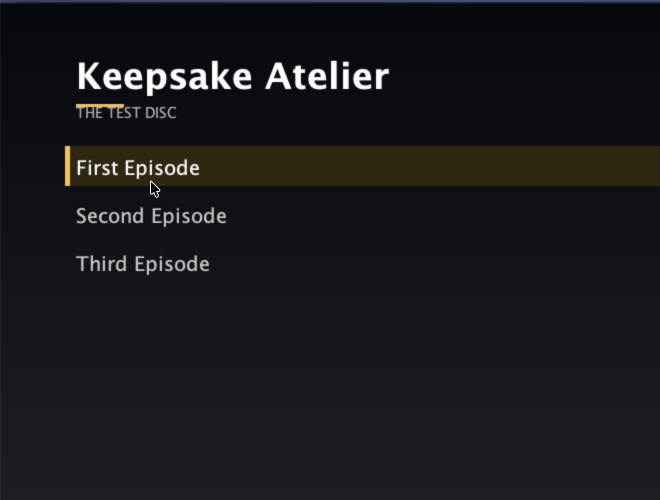

See the whole disc
Every title, playlist, clip, duration, chapter mark, stream and AACS state, read through libbluray.
Blu-ray ripping and authoring
Rip, author, verify and burn Blu-ray discs with native tooling, on macOS, Linux and Windows. Native AACS key recovery, UDF 2.50 images, authored BD-J menus, DVD-Video and 1:1 clones. No MakeMKV, no subscription.
What it does
Inspect first, rip losslessly, author something new, then check it before it touches a burner.
Every title, playlist, clip, duration, chapter mark, stream and AACS state, read through libbluray.
Recover AACS1 volume and disc keys, and derive AACS2 unit keys, from the disc and the drive.
H.264, HEVC, VC-1, MPEG-2 with AC-3, E-AC-3, DTS, TrueHD, FLAC and PGS subtitles into MKV or MP4.
Software or hardware encoding, 8-bit or 10-bit, with sensible default track selection.
One title or many, a BDMV folder or a UDF 2.50 image: newfs_udf on macOS, a portable writer elsewhere.
An authored 1080p title menu, one row per title, with a background, arrow keys, digits and mouse.
List and rip DVD titles through ffmpeg's dvdvideo demuxer, keeping MPEG-2 and AC-3 or DTS.
Split a disc into per-episode files with SxxExx names, OP/ED detection and TMDB metadata.
Clone the encrypted structure bit for bit, or export a decrypted ISO or folder when you want plain files.
Walk the navigation, every PlayPL, every playlist and every clip, plus the BDJO, JAR and menu rows.
hdiutil burn by default, growisofs when you name a device. Dry run first, confirmation required.
Every capability is a command and an MCP tool, so an assistant can drive the whole workflow.
The loop
Nothing is written until you say so. Every destructive step has a dry run, a confirmation or both.
Insert the disc, read the title map, pick the main feature and look at the streams before a single byte moves.
Remux losslessly, encode for size, or take finished files and author a new disc with a menu and chapter marks.
Run the tree check, mount the ISO to read it back, and only then hand it to the writer after confirmation.
Authored menu
One generic Xlet reads the disc's own title list at runtime. No per-disc Java compilation.

Downloads
Builds are mirrored to GoFile and file.kiwi. Links are refreshed weekly, because free tiers expire.
Keepsake-Atelier-0.1.0-arm64.dmg
The DMG is not notarized. Open it once with right-click then Open, or run
xattr -dr com.apple.quarantine "/Applications/Keepsake Atelier.app".
The DMG bundles libbluray libaacs libbdplus; the CLI tarballs need
brew install libbluray libaacs libbdplus.
Linux ships a CLI, an AppImage and a deb; Windows ships a CLI zip and an
NSIS installer. Both desktop builds are previews; see the platform matrix in the docs.
Read the install guide.
Guides
Short, task-shaped pages. Every one ends with the exact commands and the checks to run.
Gatekeeper, the first launch, and what doctor should say.
Pick the main title, choose tracks, remux or encode, and find the file.
One title or a season, a folder or an ISO, with chapters kept.
Turn on the BD-J menu, choose a background, and verify the rows.
KEYDB, native recovery, LibreDrive limits and what to do when it fails.
Size query, dry run, the real write, and the read-back check.
List the titles and copy MPEG-2 with AC-3 or DTS.
Episode split, naming, openings and endings, and TMDB.
Turn on the MCP server and hand the workflow to Claude or Cursor.
Support
The app is MIT and stays free. If it saved you a weekend, there are three ways to help.
Disc rips that will not start, a drive that will not unlock, a menu that needs a second pair of eyes. Bring the log.
discord.gg/SUaUrVGj5fOne-off support through Ko-fi. No subscription, no tiers, no locked features.
ko-fi.com/ghosty99Ethereum mainnet. Copy the address or scan it in any wallet.
0xbBef115aD853236a350EaF04777a2AdB2e7c0317
Questions
No. Native AACS key recovery reads the volume ID from the drive and derives the key from the disc's MKB. MakeMKV dumps are supported as a fallback but are not required.
The volume ID needs a LibreDrive vendor read. Stock firmware on many drives does not provide it. libaacs with a KEYDB entry still decrypts, and the app says which path it used.
The BDJO, the JAR and the menu rows are checked, and the Xlet is run in a real JVM harness. Hardware playback is still untested, so menus are opt-in with author --menu.
Yes. macOS uses hdiutil burn, Linux uses growisofs, and Windows uses the built-in IMAPI2 stack. Dry run is the default and a write needs an explicit confirmation. A blank BD-RE or BD-R is required. The Windows write path is implemented but has not been run on a physical writer yet.
Under ~/Library/Application Support/keepsake-atelier. The KEYDB file stays local and is never uploaded.
Yes. Linux ships a tested CLI plus AppImage and deb builds; Windows ships a CLI zip and an NSIS installer. Both desktop builds are previews, and drive discovery, ripping and authoring work there. Burning and native AACS recovery remain macOS features.